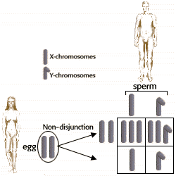
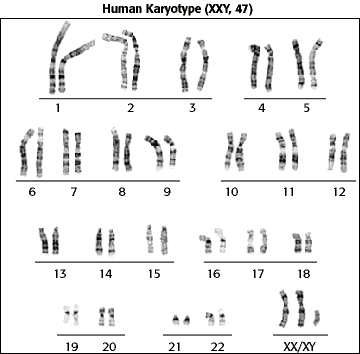

Human Genetics Problem Set
Problem 11 Tutorial: Diagnosis of Klinefelter's syndrome
Klinefelter's syndrome (XXY) is an example of
chromosomal aneuploidy that can be readily diagnosed by:
C. Karyotyping |
| Chromosomal aneuploid is a genetic condition in which an individual has either an abnormal number of one or more chromosomes, or has pieces of chromosomes lacking or in excess. |
|
Klinefelter's syndrome, XXY males, can occur due to nondisjunction of X chromosomes during prophase of meiosis I in females.
One of the eggs from such a meiosis could receive both X chromosomes, and the other would receive no X chromosomes. If these eggs are subsequently fertilized with normal sperm, various sex chromosome aneuploidies could occur:
XXY - sterile male who may have some female body characteristics, and in some cases increased learning hurdles. XXX - There are no real stigmata connected with this syndrome. Women with triple X usually are fertile. XO - sterile female with short stature, with low mental ability, failure to undergo puberty (Turner's syndrome). YO - Non-viable; genes on X chromosome required for development and survival. Nondisjunction during sperm production can also result in aneuploidy of sex chromosomes. |
 |
|
To detect chromosomal aneuploidies, the number, types, and appearance of chromosomes is determined by karyotyping, a pictorial display of chromosomes photographed through the microscope.
 |


University of Arizona
Revised: November 5, 1998
Contact the Development Team
http://biology.arizona.edu
All contents copyright © 1998. All rights reserved.